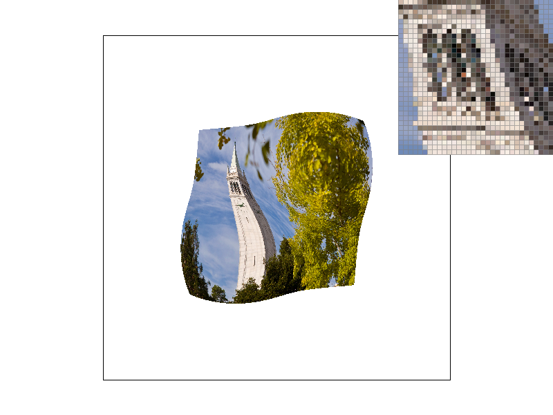
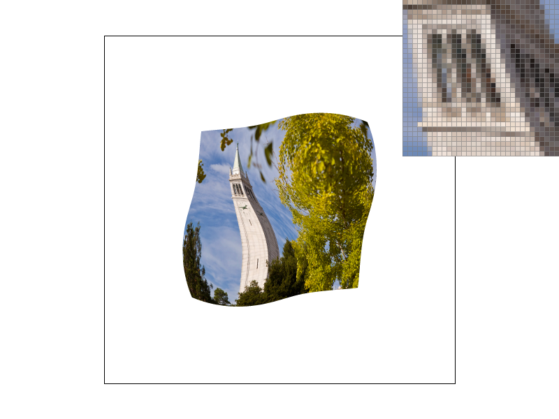

CS184/284A Spring 2025 Homework 1 Write-Up
Names:
Link to webpage: (TODO) cs184.eecs.berkeley.edu/sp25
Link to GitHub repository: (TODO) cs184.eecs.berkeley.edu/sp25

Overview
Give a high-level overview of what you implemented in this homework. Think about what you've built as a whole. Share your thoughts on what interesting things you've learned from completing the homework.Task 1: Drawing Single-Color Triangles
To rasterize triangles, simply check if each pixel is inside the triangle, then call the fill_pixel function.- Determine the winding order of the triangle vertices by calculating the Vector2D cross product of any two edge vectors from the same point. Positive values indicate counterclockwise order. Note that on the screen, this appears to be clockwise instead because convention has the positive y-axis pointing downwards.
- For each pixel, do a line test for each edge of the triangle to determine if the pixel should be colored.
- Normal vector N = <-y, x>.
- Vector V is from the same vertex origin as N, pointing to the pixel of interest.
- Dot product A·B = |A||B|cos𝜃 can indicate if the point is on the same side of the line as N, with 𝜃 being the angle between A, B, since cosine is only positive for 𝜃 between (-90, 90).
- If all dot products have the correct sign, call fill_pixel().
Performance: My algorithm is no worse than one that checks each sample within the bounding box because I also create a bounding box at the beginning based on the min and max xy values, and only check points within this box. Additionally, I have made optimizations that have drastically reduced rendering time.
Extra Credit: I made two optimizations. First, I removed redundant arithmetic involved in line testing outside of the nested loops. This made the greatest speedups, as I found the repeated initialization of a std::vector
| optimization | basic/text3.svg render time (seconds) |
|---|---|
| unoptimized | 0.074841 |
| std::vector norms outside loops | 0.041603 |
| std::vector points moved outside loops | 0.007952 |
| early break bool | 0.006994 |
As shown below, triangles can now be rasterized. However, they have aliasing like jaggies, as well as detached corners (red, pink triangles)
Task 2: Antialiasing by Supersampling
Supersampling allows us to resolve aliasing errors like ‘jaggies’ that occur due to insufficient sampling. By ‘mixing’ the colors a pixel is responsible for, we can get a smoother image. Modifications I made:- Update the set_sample_rate() and set_framebuffer_target() methods appropriately; specifically the sample_buffer.resize() method to scale the buffer accordingly by our sample_rate.
- Update resolve_to_framebuffer() to take the average color of the responsible samples. Collect the sample Color values into one, then divide by the sample_rate.
- Update rasterize_triangle(). This was mostly just scaling the bounding box coordinates and consequently V vector construction, but since vectors are just direction and magnitude, others don’t need to be changed. Also, write to sample_buffer rather than calling fill_pixel()
- Update fill_pixel by filling all supersamples for the pixel with the color.
Here is basic/test4.svg rendered with 1, 4, and 16 sample rates. The jaggies smooth out as sample rate increases, and the triangles no longer disconnect
|
|
|
|
Task 3: Transforms
For this task, I made the cubeman lie down. First, envelope his entire body with a 90 degree rotation, which cascades down to the limbs through the hierarchical structure. Then, working outwards, reposition the limbs so that the cubeman is comfortable.Task 4: Barycentric coordinates
Barycentric coordinates tell you where a point is relative to the vertices of a triangle. For a point P within a triangle XYZ, barycentric coordinates act like sliders from 0 to 1, where 1 indicates the point is close to the corresponding vertex. (1, 0, 0) means P is at A. The triangle shown on the right has red, green, and blue at each of the vertices. The barycentric coordinates are used to weight the colors at each pixel, showing how these coordinates balance themselves as they near a different corner. This quality allows smooth interpolation of values across a triangle.|
|
|
Task 5: "Pixel sampling" for texture mapping
Pixel sampling is used to create a new digital image from an old or analog photo. It’s like choosing a color or value for each pixel on the screen to best represent the sampled object. Texture mapping, which manipulates a 2D image into different shapes, uses pixel sampling to get each texel for the corresponding pixel. Nearest pixel sampling rounds to the closest texel, returning the color of the texel. Bilinear pixel sampling is a little more precise, getting the color at the same ratio between surrounding texel coordinates by interpolating the four texel coordinates bounding the point.Bilinear produces slightly smoother and more consistent lines than the nearest pixel, as seen in the border between the campanile and the sky in the pixel inspector. However, the calculations to sample the correct spot may add some time for performance. Nearest pixel is most efficient, but can have some strange aliasing depending on luck and pixel sampling alignment.
|
|

|
|

|
|
Typically, there won’t be too huge of a difference between the two methods, unless the nearest pixel happens to always be very different from the image at the area, due to noise or other reasons. In fact, this can sometimes hide images within images.
Task 6: "Level Sampling" with mipmaps for texture mapping
Level sampling allows us to ensure each pixel gets a value that properly represents the textures it is responsible for. When the image is stretched, many pixels are responsible for few texels. Similarly, when squished, few pixels are responsible for many texels. To avoid the aliasing, we pre-blend the image by different amounts to create different levels of blur. Then, level sampling chooses the appropriate level based on the distortion.Supersampling produces the best results, but scales with sample_rate in terms of memory and speed. It’s best suited for detailed scenes that don’t need to be rendered in real-time. Pixel sampling selection comes at relatively low cost for both, with decent performance. Level sampling is also a high cost technique, as it requires the generation of many different levels of blurring (mip maps), which takes up about 4/3 more space as well as initial start time. During rasterization, it also has some speed cost for the calculation of levels for each pixel sampling.

|

|
|
|
|